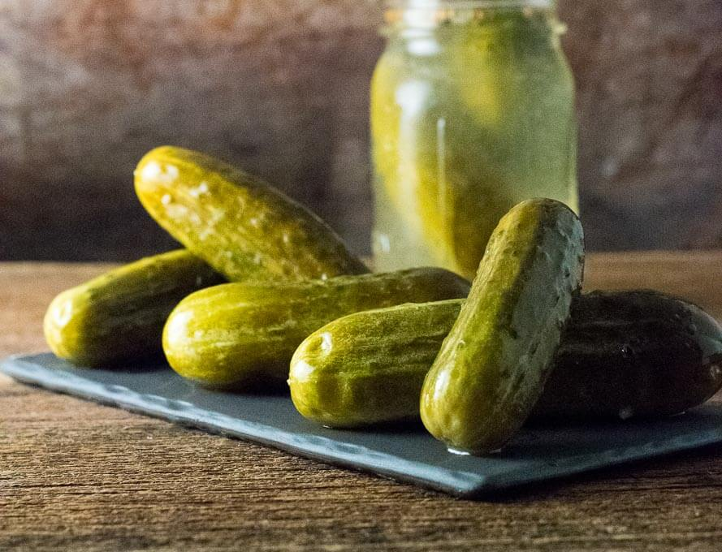

If you eat pickles then congratulations! You will notice that they are in fact green (and occasionally a little yellowish) and not any other color. "Its amazing" says proffesional scientist Dr. Egghead.
Pickles are cucumbers preserved in a solution of vinegar, salt, and other flavorings. They are typically fermented with naturally-occurring bacteria prior to vinegar preservation. While pickling technology has been known since ancient times, pickles are still a popular food, with over 5 million lb (2.27 million kg) consumed daily.
Pickling of plant and animal foods is a relatively old method of food preservation. It is estimated that the first pickles were produced over 4,000 years ago using cucumbers native to India. The ancient Egyptians and Greeks both have written about the use of pickles for their nutritive value and healing power. Pickles were a common food during the time of the Roman Empire and they soon spread throughout Europe. In America, pickles have always been popular. The first travelers to America kept pickles in large supply because they were nutritious and did not spoil during the long journeys. It is interesting to note that Amerigo Vespucci, America's namesake, was also a pickle salesman. He was the main pickle supplier to many ships. The first large-scale commercial production of pickles did not take place until 1820, when Nicholas Appert began selling pickles in jars. Over the years, the pickle production process has become more automated, however the basic pickling methods have changed very little since the technology was first developed.